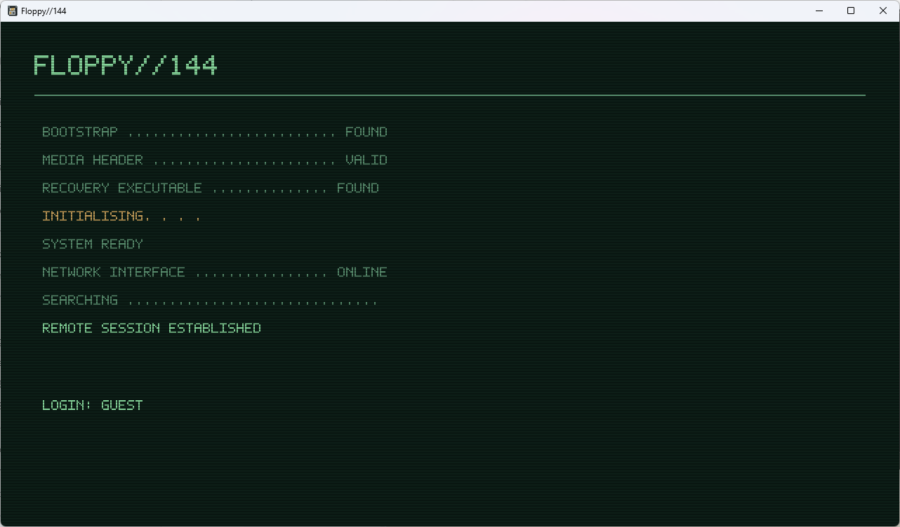
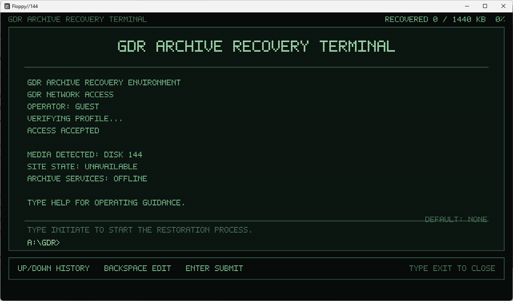
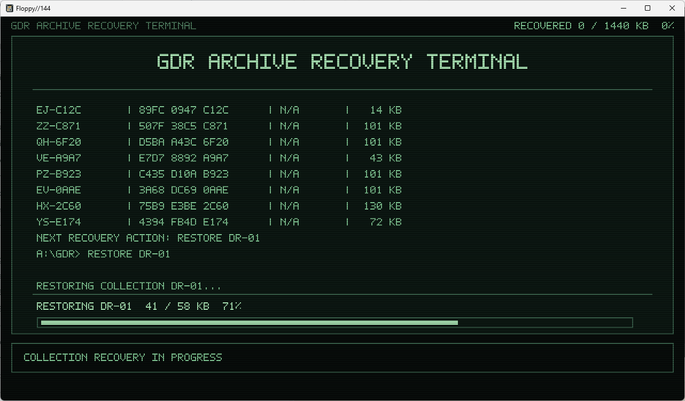
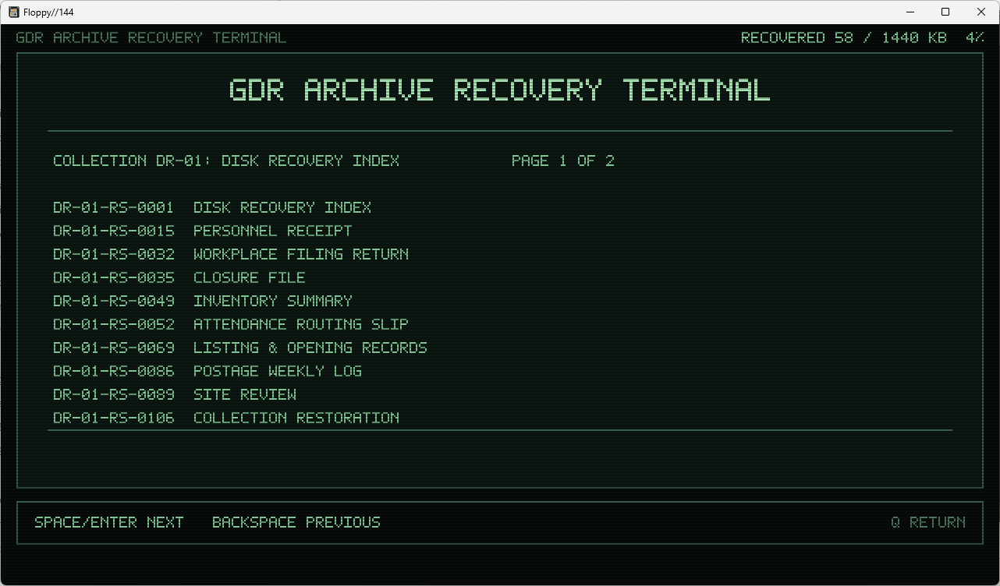
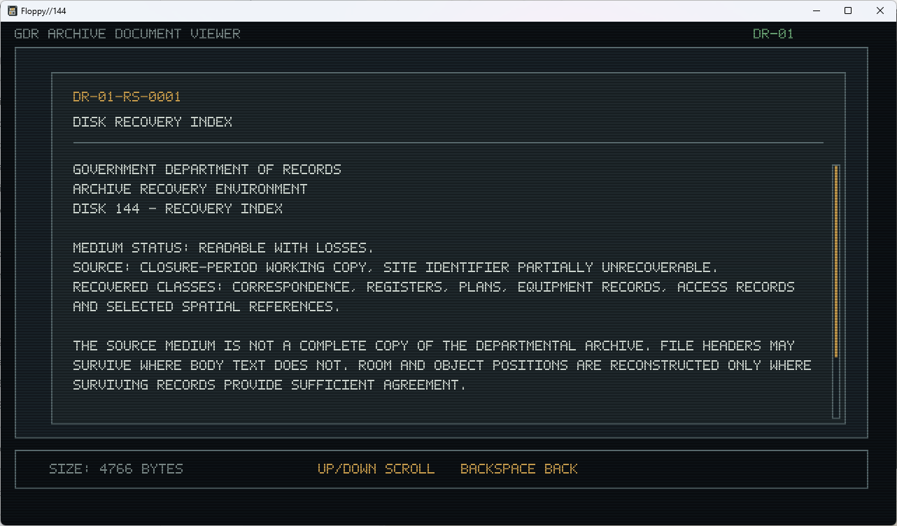
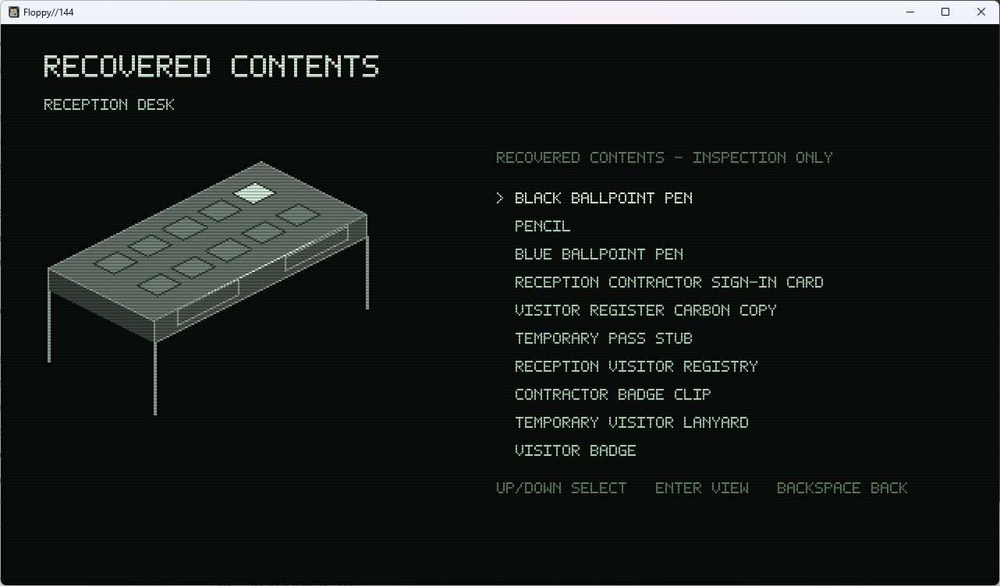

CASE FILE / 02
The photographic
record.
A look inside the Government Department of Records.
Actual screenshots from the Windows beta. Select a photograph to view the original capture at full size. Presentation may change during development.
 OPEN FULL SIZE
OPEN FULL SIZE
The department
Explore the quiet reception area of the Government Department of Records.

OPEN FULL SIZEA connection established
An old disk. An ageing system. The start of an unexpected connection.

OPEN FULL SIZEThe archive terminal
A command line is your way back into the departmental archive.

OPEN FULL SIZERecovery in progress
Restore fragmented collections while keeping an eye on the available capacity.

OPEN FULL SIZEA trail of paperwork
Browse the documents recovered from a collection.

OPEN FULL SIZERead between the lines
Read recovered records to understand the archive and the department.

OPEN FULL SIZEA closer inspection
Inspect the furniture and equipment. Even an ordinary desk has a record.